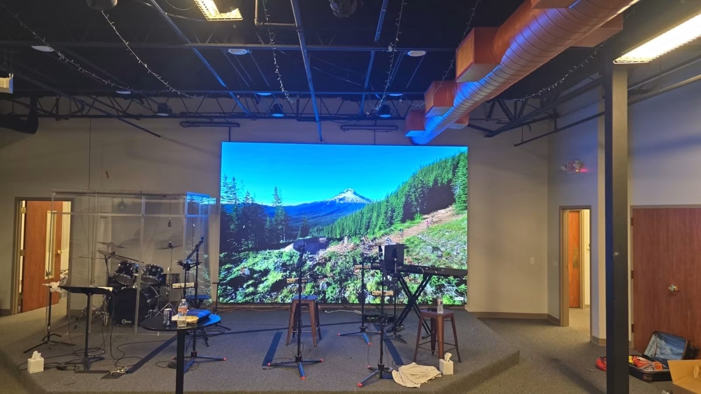
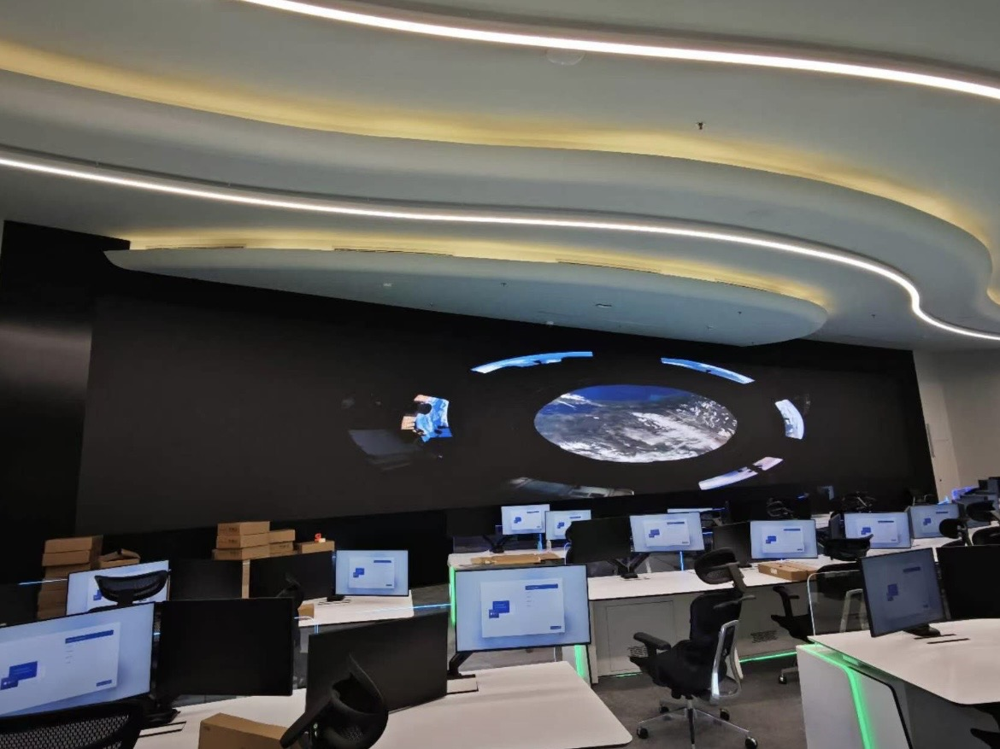

By David
What is a led display quality inspection report? A led display quality inspection report is the written record of a pre-shipment inspection, listing the checks, the results, the defects, and the pass or fail outcome. Knowing how to read it turns the report into a decision. This 2026 guide explains its contents and how to use it.
An inspection report is the buyer's evidence of quality before shipment. It records what the inspector checked and what was found, including any defects. Read well, it tells the buyer whether to pay the balance and ship, or to hold and fix.
This led display quality inspection report guide is written for buyers who commission or receive a pre-shipment inspection. It covers the report's contents, the pass and fail criteria, and how to act on the findings.
The report contains the inspection details, the quantity checked, the results of each test, the defects found, and the photographs. It should name the model, the batch, the date, and the inspector. The details make the report verifiable.
| Section | Content | Why It Matters |
|---|---|---|
| Identification | Model, batch, date | Matches your order |
| Quantity | Units checked and total | Confirms the count |
| Tests | Results of each check | Shows what passed |
| Defects | Faults found and severity | The real finding |
| Photos | Evidence of the goods | Supports the report |
Read the tests and the defects together. A report that shows all tests passed but lists minor defects is telling you the goods are acceptable with notes. A report with failed tests or major defects is telling you to act before shipping.
Look at the defect detail, not only the pass or fail. The number, the severity, and the location of the defects decide whether they matter. A defect at the edge of a wall is different from one in the centre, and the report should say where.
The pass and fail criteria come from the specification and the order. They include the pixel failure threshold, the colour uniformity standard, and the build quality. The report judges the goods against these criteria, so the criteria must be defined in advance.
Many inspections use an AQL, an acceptable quality limit, which sets how many defects are allowed in a sample. AQL defines what counts as a pass for a batch. The buyer should agree the AQL or the equivalent criteria before the inspection.
For LED displays, the pixel failure threshold often plays the role of the AQL. A report applies the threshold to the sample and decides whether the batch passes. The threshold must match the specification, or the report judges against the wrong standard.
If the report passes, pay the balance and ship. If it lists minor defects within the criteria, accept with notes. If it fails, hold the shipment and require the factory to fix the defects before shipping. The decision follows the report and the criteria.
Tie the balance payment to the report, so the money moves only on a pass. This is the leverage the inspection gives. Without the link, the report is information without consequence.
A weak report lists a pass or fail with little detail and no photographs. It cannot be checked or acted on. A strong report records each test, each defect, and the evidence. Ask the agency for a sample report before the inspection.
Another problem is a report judged against the wrong criteria, because the criteria were not agreed. The buyer should provide the criteria with the inspection brief, so the agency judges against the right standard.
An inspection report checks the specific goods before shipment, while an audit report assesses the factory and its systems. The inspection confirms the order; the audit confirms the supplier. A buyer uses both: the audit to choose the supplier, the inspection to check the goods.
The two reports serve different stages of the project. Confusing them leads to the wrong document at the wrong time. Use the audit before the order and the inspection before the shipment.
Keep the inspection report with the project file and the shipping documents. If a dispute arises after delivery, the report shows the condition at shipment. It is the evidence that the goods passed, or that the defects were noted.
The report also supports the next order. A supplier who passes an inspection consistently is reliable; one who repeatedly fails is not. The reports build a track record that informs future decisions.
A good report says where each defect is, not only how many there are. A dead pixel in the centre of a screen matters more than one at the edge. The location turns a count into a judgment about whether the defect is acceptable.
Ask the inspector to mark the defect positions on a diagram of the screen. A diagram shows the pattern, which a list of counts does not. A cluster in one area suggests a module fault, while scattered defects suggest the general quality.
If the report fails and the factory fixes the defects, re-inspect before shipping. A re-inspection confirms the fix and closes the loop. Shipping without a re-inspection risks the same defects appearing on arrival.
The re-inspection can be shorter, focused on the defects that were found. It confirms the specific fixes rather than repeating the full inspection. The report is then updated with the outcome.
The inspection brief tells the agency what to check and against which criteria. A brief that names the pixel threshold, the colour standard, and the packing requirement produces a report that matches the order. A vague brief produces a vague report.
Spend time on the brief, because it shapes the inspection. The agency checks what the brief says, no more. The brief is where the buyer's standards become the inspector's checklist.
A report is only as good as the inspector. Choose an agency with electronics experience, and ask for the inspector's name and qualifications on the report. An experienced inspector finds defects a generalist would miss, and the report is stronger for it.
Ask the agency how long the inspection takes and how many units it covers. A rushed inspection on a large order may sample too few units. The report should state the sample size, so the buyer knows the scope of the check.
For a large order, a full inspection may be impractical, so the report uses a sample. The buyer should agree the sample size and the AQL in advance, so the report judges the batch fairly. A sample that is too small gives a weak conclusion.
The report is a communication tool as well as a record. Share it with the supplier, so the factory knows what the buyer checked and how the goods measured. A supplier who sees the report learns the buyer's standards.
A shared report reduces disputes later, because the supplier cannot claim ignorance of the criteria. The report shows what was expected and what was found, which is the basis for any discussion about quality.
| Defect Type | How to Treat It |
|---|---|
| Minor, within criteria | Accept with notes |
| Major in viewing zone | Require a fix |
| Cluster failure | Investigate the module |
| Packing fault | Fix before shipping |
Occasionally a report is wrong, through an error or a misjudgment. If the buyer disagrees with a finding, raise it with the agency and the supplier, with evidence. A report is a professional judgment, and a specific challenge can correct it.
A disputed finding should be resolved before the shipment decision, not after. Waiting to resolve it on arrival loses the leverage. The report is a basis for discussion while the goods are still at the factory.
The led display quality inspection report is the buyer's evidence before shipment. Read the identification, the tests, and the defects, judge against the criteria, look at the photographs, and link the balance payment to the outcome. The report decides whether to ship.
Buyers who read the report carefully catch the problems at the factory, when they are cheap to fix. The report is only as useful as the criteria behind it and the attention of the reader.

For this requirement our range covers it directly: the X Series (front/rear service, common parts across platforms) and the series overview for spare-part lists.
Ask us for the inspection report and test data for your LED display order before shipment.
Request Inspection ReportChat on WhatsApp